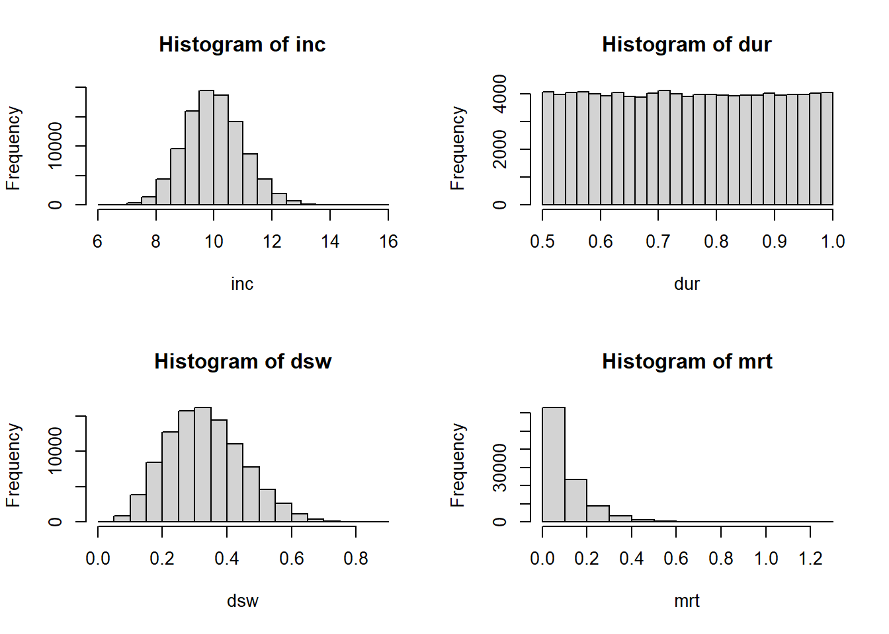

## function for fitting
fit_beta <-
function (par, p = 0.95) {
target <- par[2:3]
p <- c(0, p) + (1 - p)/2
f <-
function(x, mean, p, target) {
dev <- qbeta(p = p, shape1 = x, shape2 = x/mean - x)
return(sum((dev - target)^2))
}
shape1 <-
optimize(f, c(0, 1e4), mean = par[1], p = p, target = target)$minimum
shape2 <- shape1 / par[1] - shape1
return(list(shape1 = shape1, shape2 = shape2))
}
## function for simulating from fitted distribution
sim_beta <-
function(n, ...) {
fit <- fit_beta(...)
return(rbeta(n, fit$shape1, fit$shape2))
}
## disability weights for diarrhea
dw_dia_mld <- c(0.074, 0.049, 0.104)
dw_dia_mod <- c(0.188, 0.125, 0.264)
dw_dia_sev <- c(0.247, 0.164, 0.348)
## simulate from fitted Beta distribution
n <- 1e5
sim_dw_dia_mld <- sim_beta(n, dw_dia_mld)
sim_dw_dia_mod <- sim_beta(n, dw_dia_mod)
sim_dw_dia_sev <- sim_beta(n, dw_dia_sev)
## compare fitted to observed values
summarize <-
function(x, probs = c(0.025, 0.975), ...) {
c(mean = mean(x, ...),
quantile(x, probs, ...))
}
rbind(observed = dw_dia_mld, fitted = summarize(sim_dw_dia_mld)) mean 2.5% 97.5%
observed 0.07400000 0.04900000 0.104000
fitted 0.07406902 0.04872547 0.103878rbind(observed = dw_dia_mod, fitted = summarize(sim_dw_dia_mod)) mean 2.5% 97.5%
observed 0.1880000 0.1250000 0.2640000
fitted 0.1879143 0.1227164 0.2633385rbind(observed = dw_dia_sev, fitted = summarize(sim_dw_dia_sev)) mean 2.5% 97.5%
observed 0.2470000 0.1640000 0.3480000
fitted 0.2469503 0.1606822 0.3452463## visualize random values
boxplot(
las = 1,
ylab = "Disability Weight",
cbind("Mild" = sim_dw_dia_mld,
"Moderate" = sim_dw_dia_mod,
"Severe" = sim_dw_dia_sev))